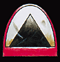
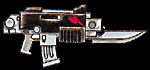

Imperial Forces |
Force Disposition Introduction |
Ork Forces |
|
Several Brotherhoods of the White Scars have deployed into the freezing wastes of Armageddon known as the Deadlands. Here their highly mobile style of warfare is perfect for lightning fast responses to attacks launched by the Ork Speed Kults. The Orks plan to cut off the water and oil supplies to Armageddon by destroying the processing plants and drilling stations could prove disastrous and must be thwarted at all costs. These facilities are built upon shifting pack ice that prohibits the construction of underground pipelines and as a result these precious resources are pumped along lengths of flexible armoured pipes. These pipes are supported on pylons and as the ice shifts, the pipes undulate with it.
The Battle of Dante's Canyon, an action fought in the opening days of the war, displayed to excellent effect the power and style of warfare favoured by the White Scars. Dante's Canyon oil-drilling platform lies between the Lemaire Channel and St. Capeline water processing plants in the Deadlands and is built precariously on a thin ice shelf at the end of a wide, steep sided canyon. Suspensor fields and a network of steel cables anchored into the canyon walls hold the station just above the ice and enable it to drill over this hugely valuable oil field. Pouring from the Roks, the initial Ork assault on the drilling station met with dismal failure as Ork trukks and dreadnoughts crashed through the ice into the freezing water.
|
| ||||||||||||||||||||||||||||||||||||||||||||||||||||||||
|
 The White Lightning Speed Kult, having learnt from this debacle attacked again, this time using 'kustomised' warbikes and wartraks on skis. However the defenders were ready for them. The White Scars Tulwar Brotherhood, led by Suboden Khan, now launched a counterattack on the Orks. Lightly armoured bike squadrons and attack bikes surged from the drilling station and met the Orks halfway. A swirling, mounted melee of speeding vehicles skidding around the ice raged for many hours into the night, the explosions of crippled vehicles and muzzle flashes illuminating the dark. The sheer number of vehicles meant that the thin ice cracked and broke in many places and soon both sides had to break off as the pack ice became too treacherous to traverse.  The following morning Ork Stormboys dropped from the cliffs above the drilling station, only to be met by the determined and disciplined fire of White Scar Tactical squads. Charges laid on the ice during the night were detonated, plunging yet more Orks under the ice. At the same time, Orks attempting to cut the cables securing the station to the canyon walls were attacked in the rear by Assault squads led by Suboden Khan The leader of this group of Orks was beheaded by Suboden and his broken body thrown from the cliffs. The remaining Orks were driven over the cliffs and their bodies swept below the freezing waters of the Tempest Ocean. | |||||||||||||||||||||||||||||||||||||||||||||||||||||||||